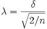

Für zwei Stichproben von gleicher Größe (n) werden die Trennschärfe mit einem Freiheitsgrad von v = 2(n-1) und die gemeinsame Standardabweichung s berechnet mit:
für zweiseitige Tests.
Der Nichtzentralitätsparameter:

/3c9d8e21a8d05e337f33114949394b33.png)